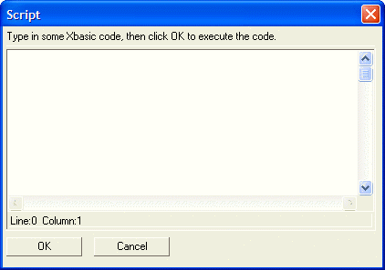

Text Box I Directive
Syntax
%I%
Description
You can turn a standard text box control into a Xbasic Interactive Window using the %I% formatting code. You should define column and row dimensions for the text box that are large enough to display a reasonable size code editor.
Here is an example dialog with an embedded code editor.
|
Code = "" Result = ui_dlg_box("Script",<<%dlg% {region} Type in some Xbasic code, then click OK to execute the code.; {line=1,0}; [%I%.80,15code] {endregion}; {region} <*15&OK> <15&Cancel>; {endregion} %dlg%) if result = "&OK" then evaluate_template(code) end if |
This script produces this dialog:

See Also
Xdialog Language Directives and Operators, Text Box Syntax, Text Box F Directive